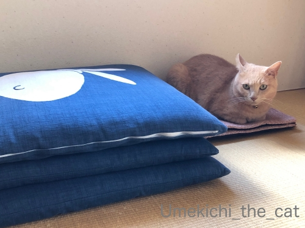
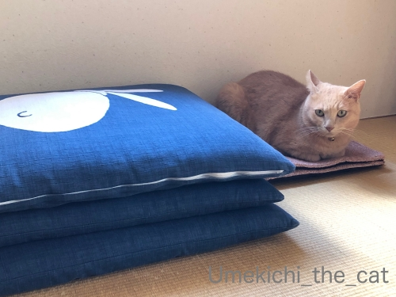

「上」と「下」は梅吉ホイホイ [梅吉]
梅吉が寝室の壁をガリガリするようになったので爪とぎ用のマットを買いました。
ダメーッ！と言うよりもよりその壁にマットを取り付けて
快適に爪とぎを楽しんでもらおうとの算段です0(≧▽≦)0
折り目のついていたマットを座布団の下でのしていたのですが・・・
座布団を取った瞬間、乗る(⌒-⌒;

満足そうです。

座布団を隣に置いてもちんまりした空間に収まり続ける梅吉さん。
それは爪とぎ用なんですがちんまりようにもう一枚ご入用ですか〜？
壁に設置は次回記事にて♪

傘の下は安定のホイホイスポット。
おとーさんの大きな傘に。

おかーさんの雨天兼用の小さな日傘の下にも入ります。
ユニクロの折りたたみ傘には反応が鈍いです。
お気に召さないんでしょうかwww

ベランダに出ても「下」があると入らずに入られない！
梅吉がどこにいるか分かりますか( ´艸｀)
＊＊＊＊＊＊＊＊＊＊＊＊＊＊＊＊＊＊＊＊＊＊＊＊＊＊＊＊＊＊＊＊＊＊
梅吉が潜り込んでいるのはソーラーパネルの下です。
災害は忘れた頃にやってくる、なんて言われていましたが
近年の日本の災害は先の被害の記憶が薄れる間も無くやってきます。
防災用品のチェックの頻度も増えますよ。この日はバッテリーチェック！！
ソーラーパネルとつながっているのは大容量バッテリー。
昨年の9月の大阪の台風、その後の北海道の地震で札幌の実家が停電になったことで
購入を決めました。
コードで繋いでソーラーパネルから、ACアダプターで電源からと２つの方法で蓄電できます。
昨年にも記事にしているので覚えている方もいらっしゃるかも。
suaoki と言うメーカーの商品です。
（昨年の記事はこちら）
フル充電しておけば扇風機の風量を「中」くらいで、スマホ（2台）、PC（1台）を
つなぎっぱなしにしても20時間くらいは持つかな。
ああ、PCの場合はルーターとかも繋がなきゃと今気づくw
非常にはスマホが使えたらOKかな。
電源喪失が数日間あることも想定してソーラーパネルを買いました。
お天気頼みになってしまいますが日が照っていれば８時間くらいで８割くらいまで充電できます。
洗濯機も動かせました。
家にあるパネルヒーターも動かせるので冬は暖をとることも可能。
（諸条件によって異なるのであくまで参考値としてみてくださいね）
テレビは・・・コンセントが面倒なところにあるので試してないのですが〜。（すいません）
昨年記事にした時にぽちの輔さんが「テレビは意外と消費電力少ないよ。PCと同じくらい」
とコメントしてくださったのでそれに勇気付けられてます（笑）
あ、盲信しているわけではないのでご安心くださいね＾＾
電源確保、ほんの助力としかなりませんが何もないよりずっとまし。
すくなくともスマホを持って充電しようとウロウロしなくても大丈夫そう。
災害時は最終的には公的な援助に頼ることになると思いますが
電源、トイレ、水、食料、多少の冷暖房の確保、ある程度個人で備えておかなくてはと
改めて思っているところです。
今回はトイレ関係の色々もう少し揃えようかと思っています。
しかし！考えることはみなさん同じのようでネットで見ると良さそうなものは売り切れが多いです（ｰ ｰ;)
ダメーッ！と言うよりもよりその壁にマットを取り付けて
快適に爪とぎを楽しんでもらおうとの算段です0(≧▽≦)0
折り目のついていたマットを座布団の下でのしていたのですが・・・
座布団を取った瞬間、乗る(⌒-⌒;
満足そうです。

座布団を隣に置いてもちんまりした空間に収まり続ける梅吉さん。
それは爪とぎ用なんですがちんまりようにもう一枚ご入用ですか〜？
壁に設置は次回記事にて♪
傘の下は安定のホイホイスポット。
おとーさんの大きな傘に。
おかーさんの雨天兼用の小さな日傘の下にも入ります。
ユニクロの折りたたみ傘には反応が鈍いです。
お気に召さないんでしょうかwww
ベランダに出ても「下」があると入らずに入られない！
梅吉がどこにいるか分かりますか( ´艸｀)
＊＊＊＊＊＊＊＊＊＊＊＊＊＊＊＊＊＊＊＊＊＊＊＊＊＊＊＊＊＊＊＊＊＊
梅吉が潜り込んでいるのはソーラーパネルの下です。
災害は忘れた頃にやってくる、なんて言われていましたが
近年の日本の災害は先の被害の記憶が薄れる間も無くやってきます。
防災用品のチェックの頻度も増えますよ。この日はバッテリーチェック！！
ソーラーパネルとつながっているのは大容量バッテリー。
昨年の9月の大阪の台風、その後の北海道の地震で札幌の実家が停電になったことで
購入を決めました。
コードで繋いでソーラーパネルから、ACアダプターで電源からと２つの方法で蓄電できます。
昨年にも記事にしているので覚えている方もいらっしゃるかも。
suaoki と言うメーカーの商品です。
（昨年の記事はこちら）
フル充電しておけば扇風機の風量を「中」くらいで、スマホ（2台）、PC（1台）を
つなぎっぱなしにしても20時間くらいは持つかな。
ああ、PCの場合はルーターとかも繋がなきゃと今気づくw
非常にはスマホが使えたらOKかな。
電源喪失が数日間あることも想定してソーラーパネルを買いました。
お天気頼みになってしまいますが日が照っていれば８時間くらいで８割くらいまで充電できます。
洗濯機も動かせました。
家にあるパネルヒーターも動かせるので冬は暖をとることも可能。
（諸条件によって異なるのであくまで参考値としてみてくださいね）
テレビは・・・コンセントが面倒なところにあるので試してないのですが〜。（すいません）
昨年記事にした時にぽちの輔さんが「テレビは意外と消費電力少ないよ。PCと同じくらい」
とコメントしてくださったのでそれに勇気付けられてます（笑）
あ、盲信しているわけではないのでご安心くださいね＾＾
電源確保、ほんの助力としかなりませんが何もないよりずっとまし。
すくなくともスマホを持って充電しようとウロウロしなくても大丈夫そう。
災害時は最終的には公的な援助に頼ることになると思いますが
電源、トイレ、水、食料、多少の冷暖房の確保、ある程度個人で備えておかなくてはと
改めて思っているところです。
今回はトイレ関係の色々もう少し揃えようかと思っています。
しかし！考えることはみなさん同じのようでネットで見ると良さそうなものは売り切れが多いです（ｰ ｰ;)
2019-09-19 00:00
nice!(82)
コメント(28)

カフェオレ色の梅吉

梅吉 2023年8月10日 永眠


梅吉と出会った譲渡会

犬猫の理由なき殺処分ゼロ
妄想広告
UMEKICHI 光

爆発的に早い！
時々攻撃的！
Thanks to Mr.Boss365
爆発的に早い！
時々攻撃的！
Thanks to Mr.Boss365

爪とぎマットだったんですかー。使い方は間違ってますが気に入ってもらえたようですね。
こう災害が多いと備えは考えちゃいますね。私がスマホにした理由のひとつもガラケーだと情報弱者になりそうな気がしたからです。
by zombiekong (2019-09-19 00:29)
何かの下がとっても大好きなんですね♪
傘をさす梅吉くんはとってもキュートでかわいい～
ユニクロはお気に召さないとは気品高し！
by yamatonosuke (2019-09-19 01:34)
傘の下がお気に入りかと思いきや
こだわりがあるんですね
何が違うんだろう？
by 藤並 香衣 (2019-09-19 02:00)
我が家の壁紙はすでに手遅れの状態になってます（爆）
今回の千葉の様子をTVで見てると
非常時の電源確保を真剣に考えなきゃと思いました。
トイレはお風呂の水で流す方法もありますけど
それが使えない場合はニャンのトイレに便乗しようかと。
猫砂は多めにストックするようにしてます＾＾
by ぽちの輔 (2019-09-19 05:31)
実家のミイちゃんも爪とぎの上にちんまりすわっていることがあります。
ボクの場所！って思ってるみたい。
梅吉さん、傘の下に入ってるだなんてオシャレだわー。絵になる！
特に1枚目は座っている位置や角度に梅吉さんの表情、バッチリです。
災害対策、トイレのは買ってます。ゴミとして捨てられるやつだったかな。
by ChatBleu (2019-09-19 06:33)
ソーラー発電設備！
流石です。見習いたいです。
災害時はスマホの充電できるだけでも
ずいぶん役に立つはずですよねー。
by よーちゃん (2019-09-19 08:44)
梅吉さんソーラーパネルの下にはいっているのですね！
涼しいのかな？
災害が多いと電気が大事ですね。
by ma2ma2 (2019-09-19 09:05)
うちの壁はきなこが芸術的に仕上げてくれましたよ(;^ω^)
最近の災害の多さを見てると本気で備えをしとかないとって思います。やらなくちゃ、ああやらなくちゃ(-_-;)
by palpal (2019-09-19 09:42)
マットの上のご満悦な顔がよいですね♡
ソーラーパネルですか、なるほど…
身近なところで大停電が起きていろいろと考えさせられます。
by liang (2019-09-19 10:07)
梅吉さん、ちんまり乗ってますねぇ＾＾
お猫様ってこういうのは見逃しませんよねぇ(^^;)
うちは壁での爪とぎはしませんが、ソファの背もたれや
角部分で先代猫含め皆がとても気持ち良く研いでくれるので
ソファのカバーは諦めました(T_T)
災害時の備え、とりあえずニャンズの物だけは
１ヶ月分確保してます(^^;)
by ニッキー (2019-09-19 11:31)
こんにちは。
薄型の「爪とぎ用のマット」いい感じで征服してますね。
梅吉くん、見事な行動！！裏切らない感じです（笑）
これから壁に貼り付ける感じですね。ニャンズ、小さい物に乗りたがる不思議習性？
梅吉くんのソーラーハウス、良い隠れ家・基地になりそう（笑）
「ポータブル電源」のブログを覚えています。
電源確保は必要ですね。何かしないとと思いながら現在に至っている感じです。
ボスママの実家も発電機を設置しましたが、灯油燃料との保存が大変みたい。
ハイブリット車が２台あるので、緊急時はその電源を活用するみたいです！？(=^･ｪ･^=)
by Boss365 (2019-09-19 11:34)
ちんまり梅吉さん（笑
可愛過ぎます(#^.^#)
隣の座布団のほうがフワフワですが
あえて乗るんですね♪
電源確保！！必要ですね！
我が家も充電器はありますが
ソーラー式はいいですねぇ～！！
by きぃ (2019-09-19 11:59)
チラシ一枚でも何かの上、布一枚でも何かの下、お猫さまは大好きですね(#^^#)
梅吉さんの瞬間移動はさすがです！！
爪とぎ、うちのは基本キャットタワーのポールでやってくれるのですが、次に好きなのがカーペット。
こちらはいくら床置きの爪とぎ器を設置してもダメなので諦めてタイルカーペットにし、ボロボロになったら取り換えることにしました^^;
ソーラー式のバッテリー、場所さえあれば欲しいところですが・・・。
基本自宅に籠城のつもりで水やら食糧は多少備蓄していますが、電気が無かったらホント困りますもんね。真っ暗って怖いし。
もう少し真剣に考えなきゃ・・・。
by ゆきち (2019-09-19 12:17)
梅吉くんちんまり、可愛いね(*^-^*)
傘、家の中で広げたことがないからうちの子たちもちんまり収まるのか検証してみたいわ(≧▽≦)
ちぃさんのお家は災害対策をきちんと考えててすごいです。
ホント！忘れたころにだものね。
家も真剣に考えなくちゃっ！！って、考え続けてる。だめだよね～。
by emi (2019-09-19 14:33)
物陰に隠れるのが好きなんだニャ（ﾟ□ﾟ）
by 英ちゃん (2019-09-19 17:38)
家は爪研ぎマットには目もくれず、ソファーやドアで爪研ぎするのが好きな猫だったのでその痕跡が半端ないです(^_^;)
梅吉さんはお利口ですね！
東日本大震災で我が県に被害は少なかったですが停電が長くて困りました。幸い夜釣りの道具があったので何とか凌ぎましたが、その後車に電源を付けたり、風呂水などが飲料水になる簡易濾過器具、水を入れるだけで高温調理が出来るヒートパックなどを常備してます。後は車のガソリンは常に満タンが常識になってしまいました。
by kou (2019-09-19 19:28)
爪とぎマット、あっという間に確保ですね！
梅吉さん満足そうでかわいい＾＾
うちは壁紙にシートを貼ってみたけど楽しそうに剥がされたことが‥柑橘類のスプレーをしてみたら最初は離れるけど、匂いが消えかけた頃マーキングされました＾＾；
ソーラーパネル、見事ですね。下にいるのはすぐわかりましたよ＾＾
なにか備えをしなくては‥という気分にはなるのですが‥＾＾；
猫がいた頃は猫のためだけは備えないと！と思っていたものでした。今も猫砂が余ってる＾＾；
by sana (2019-09-19 20:02)
梅吉さん、爪とぎ前の座り心地チェックですね♪ ^^;
ソーラー下の梅吉さん、発見できました！
梅吉さんのお顔が映っているおかげで、ソーラーパネルや大容量バッテリーのおおよそのサイズが把握できました。^^)
傘にもお好みがあるのですね。ちょっといろいろ試したくなってしまいますね。
非常用電源、欲しいのになかなか実現できてません。。。
by yes_hama (2019-09-19 22:07)
我が家も壁は末期状態です＾＾；
歴代の猫さんが残した傷跡です。
ここしばらく、壁は安泰でしたが、チビが最近手を出し始めました。
復活です。やめて欲しい＾＾
by riverwalk (2019-09-19 23:24)
爪を研ぎそうな場所に爪とぎマットを貼り付け計画♪愛を感じます。
ソファーなどはどうしようもないけど、壁は防げますね。
こちらに引越してからは壁は好みではなのか？壁で爪とぎしなくなりました。
ソーラーパネル！想像していたものより大きいです。
畳は0.5畳分くらいありますよね？これはうちのベランダでも置けるだろうか？
と思ってしまいまいた(;^_^A
でも20時間持てばスマホ充電くらいは余裕ですね(^^
by marimo (2019-09-20 05:21)
おおお！ソーラーパネルだ！
勢いで最初にniceを押してしまったので、とりあえずコメント書く(笑)
今日は友達の家に遊びに行ってくるので
帰ってきたらまたじっくり読むね〜〜〜^^)b
梅吉くん、ユニクロの安い傘は興味なしねｗｗ
by リュカ (2019-09-20 09:36)
積み上げた座布団を見たら反射的に笑点を
想像しちゃいます(≧ω≦)
山田くーん、全部持ってっちゃって！と言いたくなるｗ
爪とぎとして使うか座布団にするかはワシが決めるんや！
ってお顔に見えますｗｗ(((*≧艸≦)ﾌﾟﾌﾟｯ
傘も大人気アイテムですよね♪
ソーラーパネル！ナイスです！！
うちも昨年は停電の憂き目にあいましたので
それなりの装備を整えましたよ。
台風よ、ドンとこい！なーんて＾＾ウソです(笑)
by カトリーヌ (2019-09-20 13:46)
こんにちは。
別件ですが・・・
「ゴスロリウェディング」とは気付かずに失礼致しました（汗）
原宿でよくお見かけするゴロスリですが、まさか、ウェディングとは初めてな感じです。
小生には、フリルカチューシャ？がメイド風のイメージを喚起させてします。
ティアラだったら違った印象になったかもです？
弁解になっていませんが・・・重ねて申し訳ないです。また、
色々と小生の足りないコメントにフォローをして頂き、
マジで助かっています。感謝！？(=^･ｪ･^=)
by Boss365 (2019-09-20 16:02)
こんにちは。
「ゴロスリ」間違えました？「ゴスロリ」ですね。ところで、
zombiekongさんブログの満月広場で「アクビーW杯2019日本大会」を今夜開催！！
お忙しいとは思いますが、ご参加ください！？(=^･ｪ･^=)
by Boss365 (2019-09-20 18:18)
梅吉さんモデルさんのようです。
by ニコニコファイト (2019-09-21 06:33)
もはや、爪とぎ用じゃなくて、ちんまり座り用マット?!(^m^)
･･･今回の台風では、タイヘンな停電被害で。。
ソーラーパネル＆充電器があるだけで、ずいぶん助かりそう。。
by のらん (2019-09-21 07:55)
梅吉さん用マット出来上がりですね（笑）
ソーラーパネルと大容量のバッテリー、完璧ですね。
我が家、水とトイレの準備はしてますが、
食料は引越し前にほとんど食べてしまいました（笑）
今はおかゆがあるくらいです。
by kiki (2019-09-21 08:42)
こんにちは。
度々失礼しました（笑）ストレートな良いコピーですね！？(=^･ｪ･^=)
by Boss365 (2019-09-21 13:49)